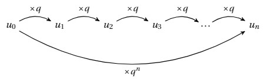

Chapitre 10 - Suites Géométriques
I - Définition et Récurrence
Une suite \((u_n)\) est géométrique s'il existe un nombre réel \(q\), appelé raison, tel que pour tout entier naturel \(n\) :
\(u_{n+1} = u_n \times q\)

II - Formule explicite
Pour tout entier naturel \(n\) et \(p\) :
- Si la suite commence à \(u_0\) : \(u_n = u_0 \times q^n\)
- Formule générale : \(u_n = u_p \times q^{n-p}\)
III - Somme de termes consécutifs
Propriété :
Soit \((u_n)\) une suite géométrique de raison \(q \neq 1\).
Pour tous entiers naturels \(n\) et \(p\) tels que \(n \geq p\) :
\(u_p + u_{p+1} + \dots + u_n = u_p \times \frac{1 - q^{n-p+1}}{1 - q}\)
En français :
\(\text{Somme} = \text{1er terme de la somme} \times \frac{1 - q^{\text{nombre de termes}}}{1 - q}\)
Remarque :
Le nombre de termes est égal à : \((\text{dernier indice} - \text{premier indice}) + 1\).
IV - Sens de variation d'une suite géométrique
Propriété :
Soit \((u_n)\) une suite géométrique de premier terme \(u_0\) non nul et de raison \(q > 0\).
- Si \(u_0 > 0\) :
- Si \(q > 1\), alors la suite \((u_n)\) est strictement croissante.
- Si \(0 < q < 1\), alors la suite \((u_n)\) est strictement décroissante.
- Si \(q = 1\), alors la suite \((u_n)\) est constante.
- Si \(u_0 < 0\) :
- Si \(q > 1\), alors la suite \((u_n)\) est strictement décroissante.
- Si \(0 < q < 1\), alors la suite \((u_n)\) est strictement croissante.
- Si \(q = 1\), alors la suite \((u_n)\) est constante.
Remarque :
Si \(q < 0\), la suite n'est pas monotone. Ses termes changent de signe à chaque rang. On dit qu'elle est alternée.
V - Modélisation
Les suites géométriques sont utilisées pour modéliser des phénomènes à évolution en exponentielle.
Important :
- Augmenter de \(t\%\) revient à multiplier par \(q = 1 + \frac{t}{100}\).
- Diminuer de \(t\%\) revient à multiplier par \(q = 1 - \frac{t}{100}\).
Exemple : Une population augmente de 3% par an. C'est une suite géométrique de raison \(q = 1,03\).